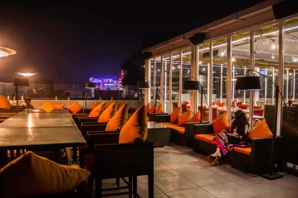
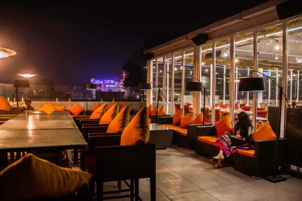

Our Menu


Gallery
 


About Us
"Welcome to The Sheeran, where culinary tradition meets innovation. As the first restaurant dedicated to curating an unparalleled dining experience from every corner of India, we take pride in celebrating the rich diversity of our country's flavors. Our chefs meticulously craft each dish, using authentic ingredients and time-honored techniques, to bring you the true essence of regional Indian cuisine. From the spicy curries of the South to the aromatic biryanis of the North, we invite you to embark on a culinary journey that spans the entire nation, all within the cozy and elegant ambiance of The Sheeran. Join us and savor the flavors of India like never before."
Contact Us
+91 8765717978
info@thesheeran.com
B-1/4 Aliganj, Lucknow